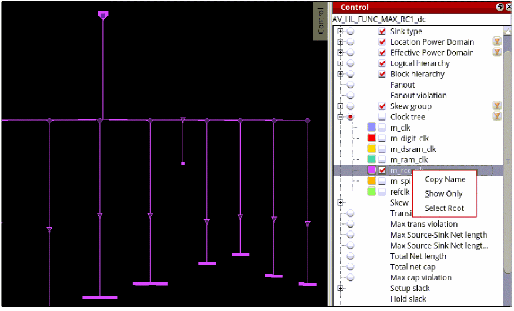
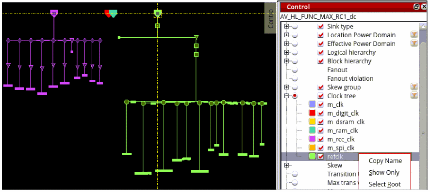
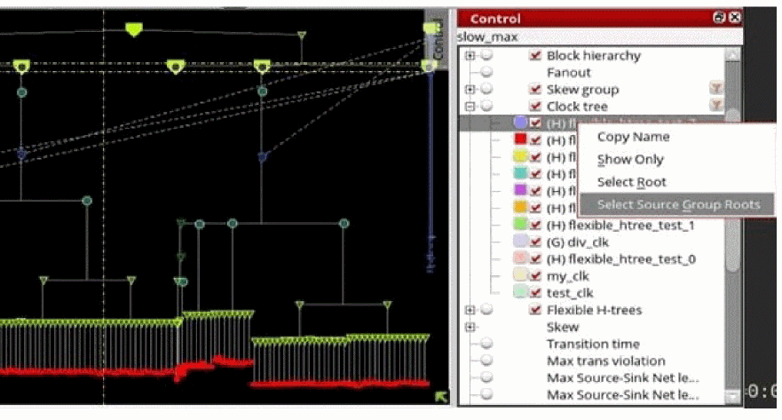
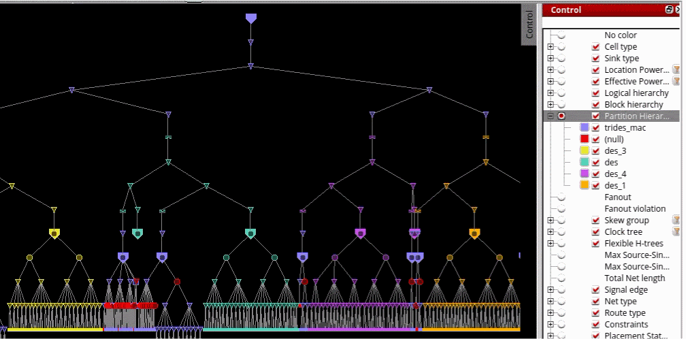

View Specific Clock Trees in the Control Panel
For viewing specific clock trees, the following options are added to the context menu of the clock trees in the Control panel of the CTD.
-
Show only: Hides all the other clock trees and refits the display to show just the one that is selected. This is similar to "Show only" in the skew groups context menu, and is useful when you want to see just that one clock tree.

-
Select root: Selects the root of the given clock tree in the display area. This helps to find the clock tree in the main CTD area, but it does not hide other clock trees. This is useful when you want to see how the clock tree interacts with other clock trees.

-
Select source group roots: Selects all the roots of clock trees in the same multitap source group. This is useful for checking multitap sink assignment issues. This option is only available when the selected clock tree belongs to a clock tree source group.

View Partition Hierarchy
The Partition Hierarchy option, available in the Visibility menu, Color by menu, and Control panel, assigns a distinct color category to each partition in the design. Markers are displayed using the color associated with their respective partition. When partitions are nested, markers use the color of the innermost partition to which they belong.

Note: This option is displayed only when partitions are configured in the design. It is available in both unit delay and timing-based modes.
Return to top